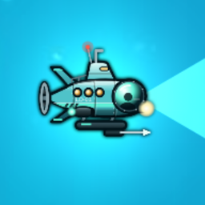
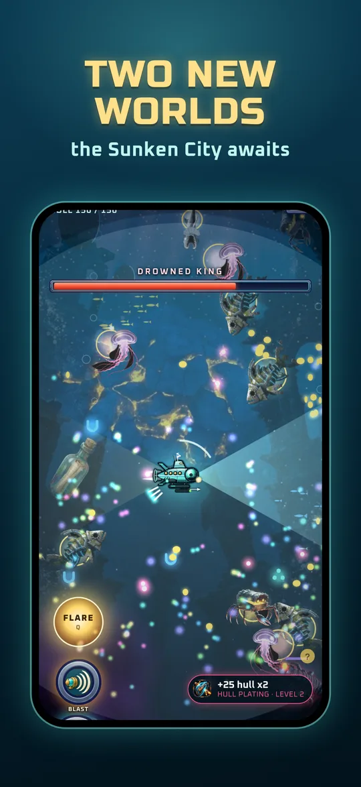
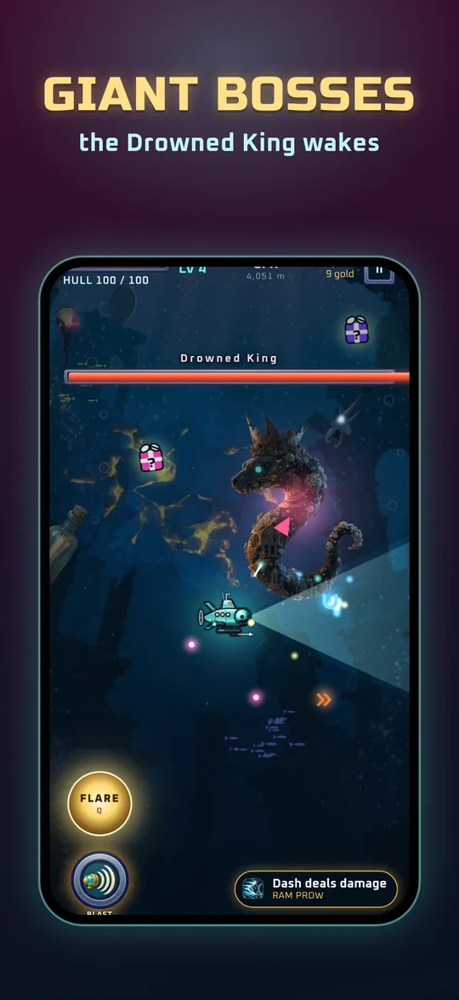
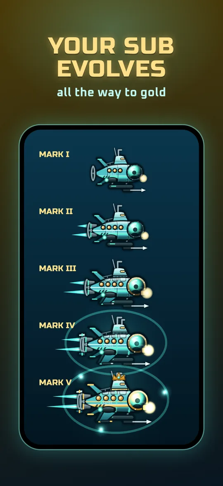
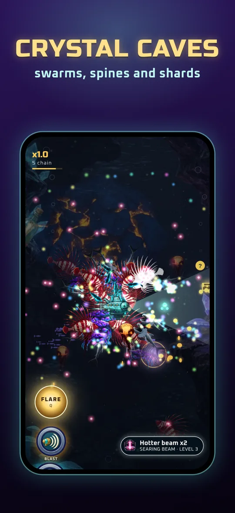
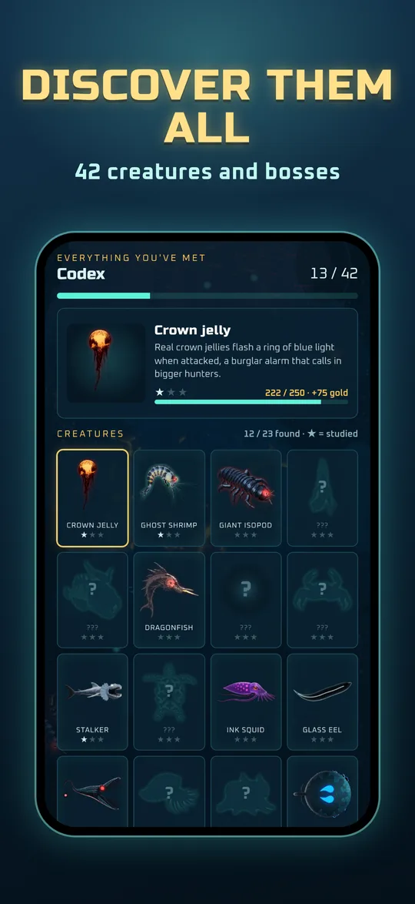
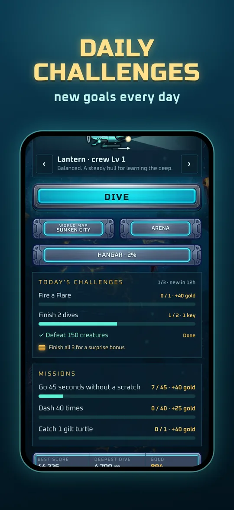

A deep-sea survival roguelike. Your lamp is your weapon.
Steer a tiny submarine with one thumb and sweep the dark with your lamp. It starts calm… then the abyss wakes up. Level up, evolve your sub and see how deep you can go.
Download on the App StoreFree to play · iPhone and iPad- 9 worlds to explore, from the Sunlit Reef to the Crystal Caves
- A boss in every world, like the Drowned King of the Sunken City
- Your sub evolves from Mark I to Mark V as you level up
- 5 subs to unlock and a Hangar full of upgrades
- Arena mode: survive wave after wave
- A daily dive and a weekly world ranking






Privacy policy
Effective 5 November 2026
- No account, no sign-up.
- Your progress stays on your phone.
- Ads only play when you choose to watch one, and they are non-personalised.
- The world leaderboard shows only a diver name you choose.
- We never sell your data.
Lumen Deep is made by Adrien Buffin, an independent developer on the Gold Coast, Australia (“we”). This policy covers the Lumen Deep app on iPhone and Android. Version 1.0 of the game had no ads or analytics; the sections on advertising and analytics apply from version 2.0.
What stays on your phone
Your gold, upgrades, subs, trophies, best scores and settings are saved only on your device. Deleting the app deletes them.
Advertising (Google AdMob)
The game is free and pays for itself with ads served by Google AdMob. Ads are only shown when you choose to watch one, for example to relight your lamp once per dive or to double your gold. There are no ads between dives.
We ask Google for non-personalised ads only, so ads are not chosen from your interests or your activity in other apps, and the game never asks to track you. To show and count ads and to prevent fraud, Google may still process your device's advertising identifier, IP address (which gives a rough location such as your country), device type and how you interact with the ad. See how Google uses information from apps that use its services.
Game analytics (Google Firebase)
We use Firebase Analytics to see how the game is played so we can make it better: for example which levels people start and finish, how long sessions last, and whether players come back. This uses a random app-instance ID plus device model, operating-system version, language and country. It is not linked to your name or email and is not used for advertising. See Firebase privacy.
World leaderboard
To show the world leaderboard, the game creates an anonymous ID for your device through Google Firebase and stores your diver name (for example “Diver4821”, which you can change), your best score and depth, your sub and a two-letter country code taken from your phone's language setting. Other players can see your diver name, flag, score and depth. It is not linked to your real name, email or identity.
Purchases
Optional purchases are handled entirely by the App Store or Google Play. We only receive confirmation that a purchase happened, never your payment details.
Notifications
If you allow notifications, the game schedules reminders on your phone, such as your daily dive bonus. They are created on the device, not sent from a server, and you can turn them off in the game options or your phone's settings.
Vibration
The game uses your phone's haptics for hits and explosions. You can switch this off with the Shake option in the game.
We never sell your data
We don't sell or rent personal information, and we don't share it with anyone except the services named on this page, which process it for us.
Children
The game is made for a general audience and is not directed at children under 13. We don't knowingly collect personal information from children. If you think a child has sent us personal information, email us and we will delete it.
Your choices
- Reset your advertising ID: on iPhone, Settings › Privacy & Security › Tracking; on Android, Settings › Google › Ads.
- Deleting the game removes everything stored on your device.
- To ask what we hold about you, or to have it deleted, email us at the address below.
Changes
If this policy changes, the new version will be posted here with a new date.
Contact
Support
Found a bug or have an idea? Email me and include your phone model.
adrienbuffin1@gmail.comMy progress disappeared
Progress lives only on your phone. It is lost if the app is deleted or the phone is reset without a backup.
I don't want reminders
Turn reminders off in the game options, or in your phone's notification settings for Lumen Deep.
The video for a second chance didn't play
Videos need an internet connection, and sometimes none is available for a moment. Try again on your next dive.
The game feels slow
Close other apps and turn off battery saver or Low Power Mode.